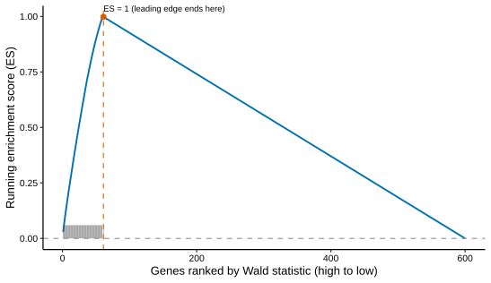

No.005
2026-01-02
SciViz Kit · 推文与教程
富集分析实战：ORA 与 GSEA 双引擎
从差异表到富集结果：rank 列表怎么排、背景怎么设、NES 与 leading edge 怎么读，clusterProfiler + fgsea 全套代码。
富集GSEAORAfgsea
ORA 与 GSEA：两种富集，两种输入
拿到差异表后，功能富集把「一列基因名」翻译成「生物学故事」。两大引擎的输入方式完全不同，也就决定了各自的适用面：
| 维度 | ORA（超几何检验） | GSEA（基因集富集） |
|---|---|---|
| 输入 | 阈值筛出的显著基因列表 | 全部基因按统计量排序的 rank 列表 |
| 检验逻辑 | 显著基因在某通路的数量是否超出随机期望 | 通路内基因是否整体偏向 rank 的一端 |
| 丢失信息 | 阈值之下的弱但一致的信号 | 几乎不丢（对阈值不敏感） |
| 输出 | 通路 × 富集显著性（p/Q 值、GeneRatio） | NES、padj、leading edge 基因 |
| 适用 | 有明确的显著基因集合（验证型问题） | 效应温和、全局微调（探索型问题） |
两者互补而非替代：先 ORA 找「主打通路」，再用 GSEA 检查「温和但一致的趋势」，可变剪接与方向性话题见 No.016 / 010。
准备：把差异表变成 rank 列表
GSEA 的输入是「全部基因、按统计量排序」——排序依据用 DESeq2 的 stat（同时编码方向与显著性），不要先按 padj 卡阈值再排序：
library(clusterProfiler); library(org.Mm.eg.db); library(fgsea); library(msigdbr)
res_df <- as.data.frame(resShrink)
res_df$ENTREZID <- mapIds(org.Mm.eg.db, rownames(res_df),
keytype = "ENSEMBL", column = "ENTREZID")
## GSEA 用：全部基因按 stat 降序（去掉 NA 与重复 ID）
stats <- res_df$stat
names(stats) <- res_df$ENTREZID
stats <- sort(stats[!is.na(names(stats))], decreasing = TRUE)
stats <- stats[!duplicated(names(stats))]
## ORA 用：阈值筛出的显著基因（No.022 的双重标准）
sig <- subset(res_df, padj < 0.05 & abs(log2FoldChange) > 1)$ENTREZID
sig <- sig[!is.na(sig)]ORA：enrichGO 与 enrichKEGG
## GO（BP 维度）：readable=TRUE 直接回填基因符号
ego <- enrichGO(sig, OrgDb = org.Mm.eg.db, keyType = "ENTREZID",
ont = "BP", pAdjustMethod = "BH",
pvalueCutoff = 0.05, readable = TRUE)
## KEGG：注意 organism 用三字母缩写（人 hsa / 小鼠 mmu）
ekegg <- enrichKEGG(sig, organism = "mmu", pAdjustMethod = "BH",
pvalueCutoff = 0.05)背景集问题：clusterProfiler 默认用「注释库中可映射的全部基因」做背景，通常合理；但若你的数据平台只覆盖某子集（如靶向 panel），必须用 universe = 显式传入实际检测到的基因，否则 p 值会系统性偏小（背景问题的完整讨论见 No.036 / 020）。
GSEA：fgsea + MSigDB
MSigDB5,6的 Hallmark 基因集（50 条凝聚的生物学状态）是 GSEA 最常用的起点；fgsea2是 GSEA1算法的快速多水平实现，与 clusterProfiler3,4输出的结果兼容：
## 取 Hallmark 基因集，转成 list（通路名 → ENTREZID 向量）
## 注：msigdbr ≥ 10 把 category 改名为 collection = "H"
H <- msigdbr(species = "Mus musculus", category = "H")
pathways <- split(H$entrez_gene, H$gs_name)
## 运行 GSEA：minSize/maxSize 过滤过小过大的通路
fg <- fgsea(pathways = pathways, stats = stats,
minSize = 15, maxSize = 500)
fg <- fg[order(padj), ]
## 单通路运行图 + top 通路总览表
plotEnrichment(pathways[["HALLMARK_INFLAMMATORY_RESPONSE"]], stats)
plotGseaTable(pathways[head(fg$pathway, 8)], stats, fg, gseaParam = 1)
| 列 | 含义 | 怎么读 |
|---|---|---|
| ES / NES | 富集分数 / 归一化富集分数 | NES > 0 通路整体上调，< 0 整体下调；|NES| 越大信号越强 |
| padj | 跨通路 BH 校正后的 FDR | 与 ORA 一样以 padj 为准，别只看原始 p |
| leadingEdge | 驱动信号的核心基因 | 最有价值的输出——机制讨论围绕它们展开 |
结果整合：从表格到故事
写作套路：ORA 与 GSEA 的交集往往是「最硬」的主打通路；GSEA 的 leading edge 基因与 ORA 的显著基因重叠部分，就是机制讨论的核心角色。可视化（气泡图、pathview 叠加）见 No.034；解读时对每条通路先问「方向对不对」（No.016）、再问「贡献基因是谁」（No.036 策略二）。
延伸阅读与参考文献
- Subramanian A, Tamayo P, Mootha VK, et al. Gene set enrichment analysis: a knowledge-based approach for interpreting genome-wide expression profiles. PNAS. 2005;102(43):15545–15550. doi:10.1073/pnas.0506580102
- Korotkevich G, Sukhov V, Budin N, et al. Fast gene set enrichment analysis. bioRxiv. 2016（预印本，2021 更新）. doi:10.1101/060012
- Yu G, Wang LG, Han Y, He QY. clusterProfiler: an R package for comparing biological themes among gene clusters. OMICS. 2012;16(5):284–287. doi:10.1089/omi.2011.0118
- Wu T, Hu E, Xu S, et al. clusterProfiler 4.0: A universal enrichment tool for interpreting omics data. The Innovation. 2021;2(3):100141. doi:10.1016/j.xinn.2021.100141
- Liberzon A, Subramanian A, Pinchback R, et al. Molecular signatures database (MSigDB) 3.0. Bioinformatics. 2011;27(12):1739–1740. doi:10.1093/bioinformatics/btr260
- Liberzon A, Birger C, Thorvaldsdóttir H, et al. The Molecular Signatures Database Hallmark gene set collection. Cell Systems. 2015;1(6):417–425. doi:10.1016/j.cels.2015.12.004
SciViz Kit · 推文 No.005
2026-01-02